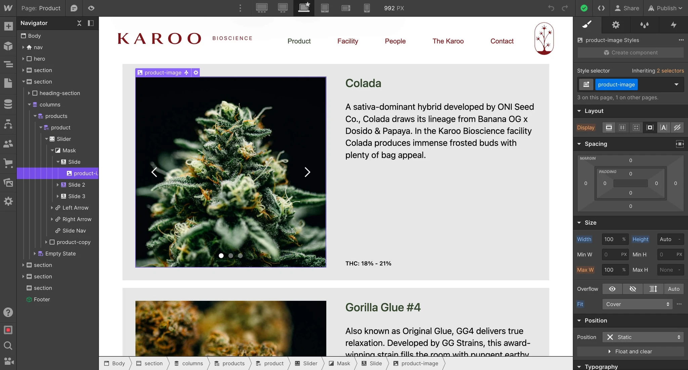
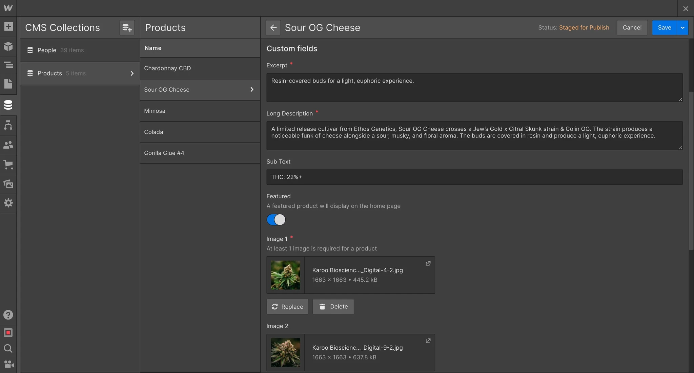
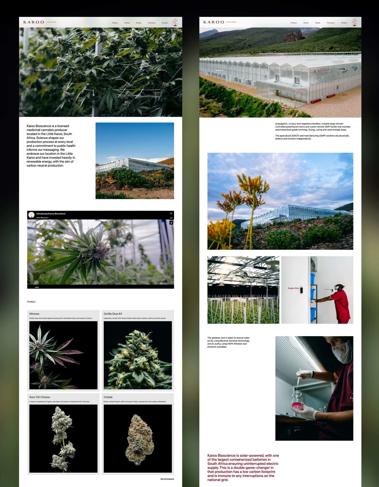

This was a collaborative project with designer and friend Daniel Ting Chong. Daniel created the brand identity for Karoo Bioscience and approached me to develop the website for the client.
I suggested Webflow as the tool for this job because I knew I could create a beautiful site as well as give full control to the client where adding products and updating copy would be super easy for them to do themselves.


"The CMS for this site was relatively simple, a few products and a database for employees. I love defining the building blocks of a site."
This website was really about showcasing the beautiful imagery and videos the client provided, and so the design almost took a step back in order to let the content shine. Looking clean and professional was especially key for this type of brand, and the client really wanted to showcase the facility, location and scientific process behind this business in a beautiful way.
Where I decided to bring something extra was in the scroll animations – I used parallax effects and fade-ins on scroll to bring the content to life.

The website is fully responsive and looks really great on mobile too. Maybe even better.